Гайд для заказчика: как оценить Angelo
Стенд для проверки: https://angelo-test.ru
В приложении есть 2 режима:
- Демо‑режим — быстро посмотреть интерфейс и сценарии на “примерных” данных.
- Реальный режим — проверить реальную работу сервера: регистрация, сохранение профиля, загрузка медиа, публикации.
Если вы видите “чужие” фото/имена или демонстрационные заглушки — проверьте, что вы не в демо‑режиме.
1) Демо‑режим (быстро посмотреть UX)
Как включить
- На главной странице нажать маленькую кнопку “Демо”.
Скрин‑шаги (куда нажимать)
- Главная страница: кнопка “Демо”
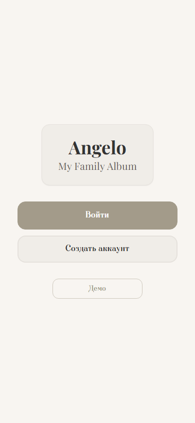
- Демо‑лента (пример данных)
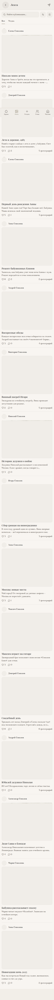
Что смотреть (рекомендуемая проверка 5–10 минут)
- Навигация: нижнее меню, переходы по разделам.
- Лента: список публикаций, открытие публикации, скролл, фильтры/поиск (если доступны).
- Семья: “Обо мне”, “Семья”, поиск.
- Дерево: клики по участникам, переходы в профили.
Что важно понимать
- В демо данные/фото могут быть моковые (примерные), не из вашей семьи.
- Некоторые действия в демо могут не сохраняться на сервере (только “витрина”).
2) Реальный режим (проверка “по‑настоящему”)
Как включить
- На главной нажать “Войти” или “Создать аккаунт” (это выключает демо‑режим).
Скрин‑шаги (рекомендуемый сценарий проверки)
- Регистрация
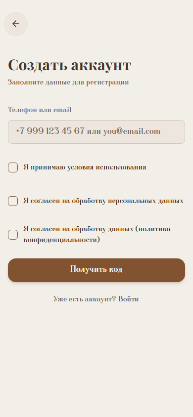
- Подтверждение кода
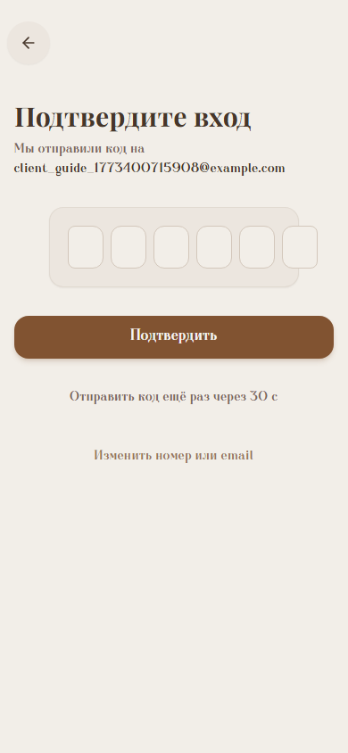
- Онбординг: заполнение профиля и загрузка аватара
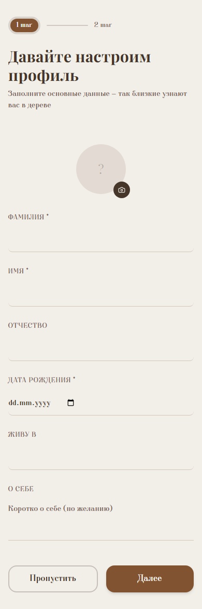
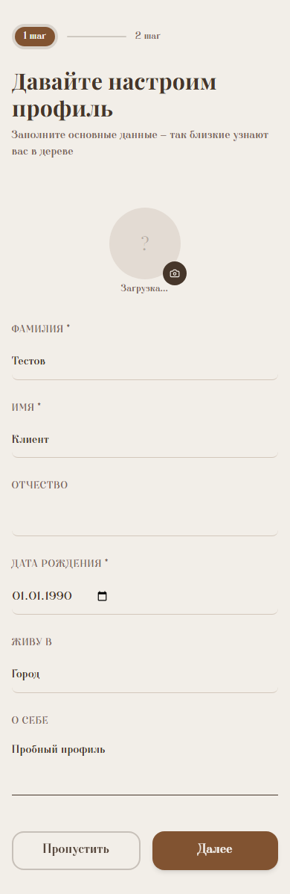
- Дерево после онбординга
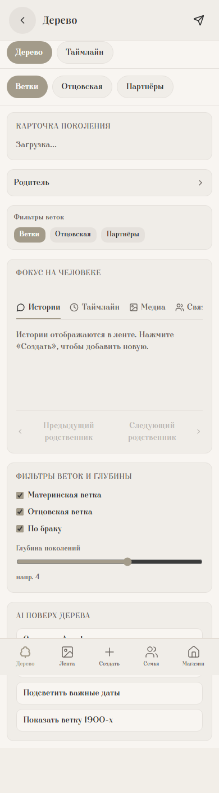
- “Семья” → “Обо мне”
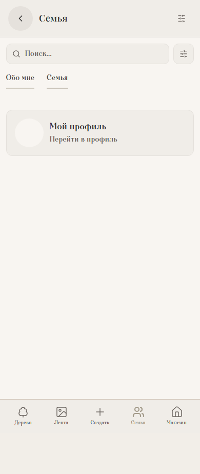
- “Создать” → выбор типа
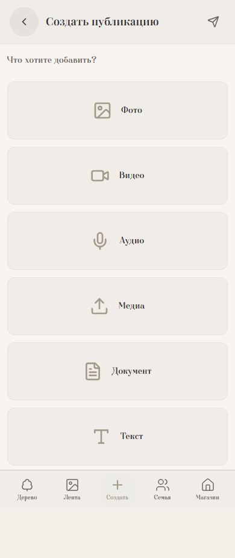
- Публикация “Текст” (выбор темы + заполнение)
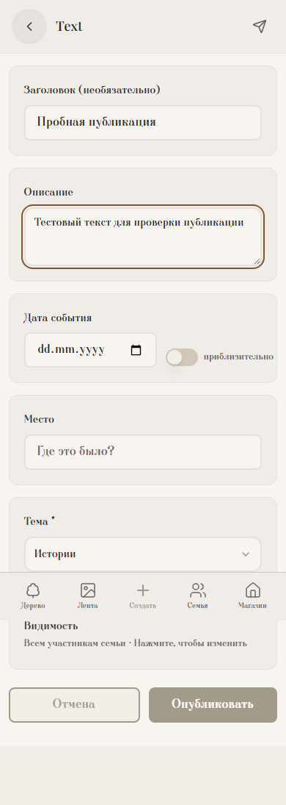
- Лента после публикации
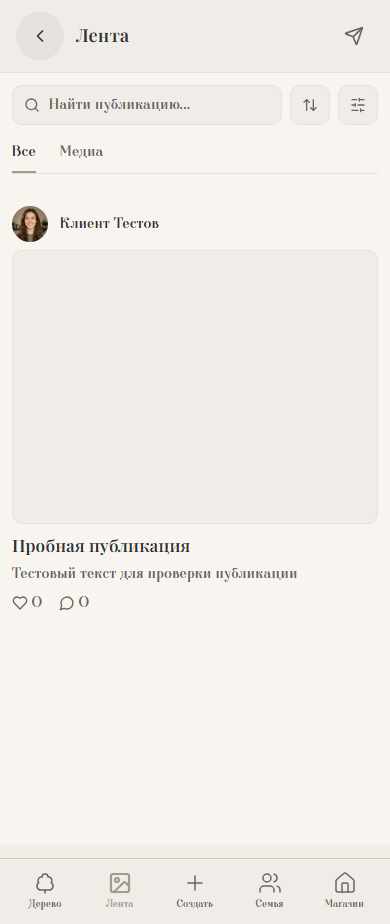
- Магазин
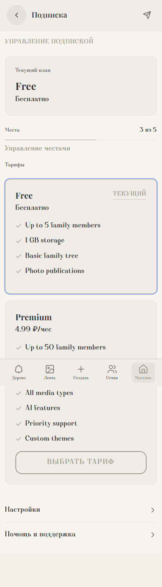
Что обязательно проверить, чтобы оценить продукт
A) Регистрация/вход
- Создайте аккаунт по телефону или email.
- Подтвердите код.
Примечание для тестового стенда: код может не проверяться — можно ввести любой 6‑значный код.
B) Онбординг (профиль)
- Заполните минимум:
- Фамилия
- Имя
- Дата рождения
- Загрузите аватар (это проверка реальной загрузки в хранилище).
- Нажмите “Далее”.
Ожидаемо:
- Аватар после загрузки отображается сразу на экране и сохраняется.
C) “Мой профиль” / “Редактировать профиль”
- Откройте “Мой профиль”.
- Проверьте, что показывается ваш аватар, а не заглушка.
- Нажмите “Редактировать профиль”:
- поменяйте “О себе” / “Город”
- попробуйте сменить аватар
- сохраните
Ожидаемо:
- После сохранения данные и аватар остаются такими же при обновлении страницы.
D) Публикации
Сделайте 2 публикации:
- Текстовую (без файлов)
- С фото (или видео/аудио — по желанию)
Ожидаемо:
- Публикации появляются в ленте.
- В карточке публикации:
- автор — вы
- медиа — ваше, загруженное
- Публикация открывается в деталях.
3) Типичные “симптомы” и что это значит
- В ленте видны моковые фото/другие авторы:
- вероятно включён демо‑режим, или часть экранов работает в демо‑логике.
- Аватар загрузился, но не отображается / 403 на картинке:
- обычно проблема доступа к хранилищу (MinIO) или настройка публичного URL.
- 500 Internal Server Error:
- проблема на стороне сервера/nginx (нужны логи и URL).
4) Как правильно сообщать об ошибках (чтобы быстро исправили)
Пожалуйста, присылайте:
- Что делали: шаги 1→2→3 (как можно точнее).
- Где: ссылка на страницу (URL).
- Что ожидали и что получили.
- Скриншот/видео.
- DevTools:
- Console: ошибки (красные строки)
- Network: запросы со статусом 4xx/5xx (особенно
presign, PUT, /api/*)
- Время (примерно) и ваш браузер.
Шаблон:
- Шаги:
- URL:
- Ожидалось:
- Получилось:
- Console errors:
- Network (status/URL):
5) Для тех. команды (прозрачность проверки стенда)
На https://angelo-test.ru выполнен автоматический smoke‑прогон (Playwright):
- Регистрация → confirm code → онбординг (загрузка аватара) → навигация → создание текст‑публикации
- Критические проверки: нет HTTP 5xx, нет pageerror, нет console error
Файл сценария: e2e/smoke.spec.ts